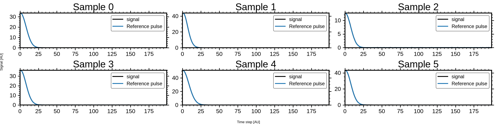
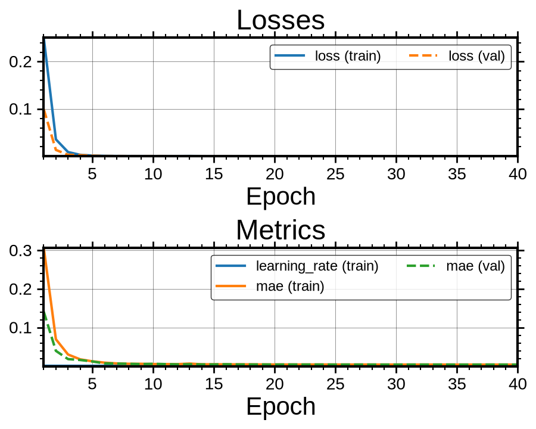

<!DOCTYPE html>


<html lang="en" data-content_root="../" >

  <head>
    <meta charset="utf-8" />
    <meta name="viewport" content="width=device-width, initial-scale=1.0" /><meta name="viewport" content="width=device-width, initial-scale=1" />

    <title>DenseNet Classifier: Detecting Regions of Interest in Synthetic Signals &#8212; DeepPeak  documentation</title>
  
  
  
  <script data-cfasync="false">
    document.documentElement.dataset.mode = localStorage.getItem("mode") || "";
    document.documentElement.dataset.theme = localStorage.getItem("theme") || "";
  </script>
  <!--
    this give us a css class that will be invisible only if js is disabled
  -->
  <noscript>
    <style>
      .pst-js-only { display: none !important; }

    </style>
  </noscript>
  
  <!-- Loaded before other Sphinx assets -->
  <link href="../_static/styles/theme.css?digest=8878045cc6db502f8baf" rel="stylesheet" />
<link href="../_static/styles/pydata-sphinx-theme.css?digest=8878045cc6db502f8baf" rel="stylesheet" />

    <link rel="stylesheet" type="text/css" href="../_static/pygments.css?v=03e43079" />
    <link rel="stylesheet" type="text/css" href="/opt/hostedtoolcache/Python/3.11.14/x64/lib/python3.11/site-packages/docs/source/_static/default.css" />
    <link rel="stylesheet" type="text/css" href="../_static/sg_gallery.css?v=d2d258e8" />
    <link rel="stylesheet" type="text/css" href="../_static/sg_gallery-binder.css?v=f4aeca0c" />
    <link rel="stylesheet" type="text/css" href="../_static/sg_gallery-dataframe.css?v=2082cf3c" />
    <link rel="stylesheet" type="text/css" href="../_static/sg_gallery-rendered-html.css?v=1277b6f3" />
    <link rel="stylesheet" type="text/css" href="../_static/default.css?v=4340df76" />
  
  <!-- So that users can add custom icons -->
  <script src="../_static/scripts/fontawesome.js?digest=8878045cc6db502f8baf"></script>
  <!-- Pre-loaded scripts that we'll load fully later -->
  <link rel="preload" as="script" href="../_static/scripts/bootstrap.js?digest=8878045cc6db502f8baf" />
<link rel="preload" as="script" href="../_static/scripts/pydata-sphinx-theme.js?digest=8878045cc6db502f8baf" />

    <script src="../_static/documentation_options.js?v=5929fcd5"></script>
    <script src="../_static/doctools.js?v=9bcbadda"></script>
    <script src="../_static/sphinx_highlight.js?v=dc90522c"></script>
    <script>DOCUMENTATION_OPTIONS.pagename = 'gallery/classifier_wavenet';</script>
    <script>
        DOCUMENTATION_OPTIONS.theme_version = '0.16.1';
        DOCUMENTATION_OPTIONS.theme_switcher_json_url = 'https://raw.githubusercontent.com/MartinPdeS/DeepPeak/documentation_page/version_switcher.json';
        DOCUMENTATION_OPTIONS.theme_switcher_version_match = 'v0.0.7';
        DOCUMENTATION_OPTIONS.show_version_warning_banner =
            true;
        </script>
    <link rel="icon" href="../_static/thumbnail.png"/>
    <link rel="index" title="Index" href="../genindex.html" />
    <link rel="search" title="Search" href="../search.html" />
    <link rel="next" title="Generating and Visualizing Signal Data" href="data_generation.html" />
    <link rel="prev" title="DenseNet Classifier: Detecting Regions of Interest in Synthetic Signals" href="classifier_dense.html" />
  <meta name="viewport" content="width=device-width, initial-scale=1"/>
  <meta name="docsearch:language" content="en"/>
  <meta name="docsearch:version" content="0.0.7" />
  </head>
  
  
  <body data-bs-spy="scroll" data-bs-target=".bd-toc-nav" data-offset="180" data-bs-root-margin="0px 0px -60%" data-default-mode="">

  
  
  <div id="pst-skip-link" class="skip-link d-print-none"><a href="#main-content">Skip to main content</a></div>
  
  <div id="pst-scroll-pixel-helper"></div>
  
  <button type="button" class="btn rounded-pill" id="pst-back-to-top">
    <i class="fa-solid fa-arrow-up"></i>Back to top</button>

  
  <dialog id="pst-search-dialog">
    
<form class="bd-search d-flex align-items-center"
      action="../search.html"
      method="get">
  <i class="fa-solid fa-magnifying-glass"></i>
  <input type="search"
         class="form-control"
         name="q"
         placeholder="Search the docs ..."
         aria-label="Search the docs ..."
         autocomplete="off"
         autocorrect="off"
         autocapitalize="off"
         spellcheck="false"/>
  <span class="search-button__kbd-shortcut"><kbd class="kbd-shortcut__modifier">Ctrl</kbd>+<kbd>K</kbd></span>
</form>
  </dialog>

  <div class="pst-async-banner-revealer d-none">
  <aside id="bd-header-version-warning" class="d-none d-print-none" aria-label="Version warning"></aside>
</div>

  
    <header class="bd-header navbar navbar-expand-lg bd-navbar d-print-none">
<div class="bd-header__inner bd-page-width">
  <button class="pst-navbar-icon sidebar-toggle primary-toggle" aria-label="Site navigation">
    <span class="fa-solid fa-bars"></span>
  </button>
  
  
  <div class=" navbar-header-items__start">
    
      <div class="navbar-item">

  
    
  

<a class="navbar-brand logo" href="../index.html">
  
  
  
  
  
    
    
      
    
    
    
    
  
  
    <p class="title logo__title">DeepPeak</p>
  
</a></div>
    
  </div>
  
  <div class=" navbar-header-items">
    
    <div class="me-auto navbar-header-items__center">
      
        <div class="navbar-item">
<nav>
  <ul class="bd-navbar-elements navbar-nav">
    
<li class="nav-item ">
  <a class="nav-link nav-internal" href="../code.html">
    API reference
  </a>
</li>


<li class="nav-item current active">
  <a class="nav-link nav-internal" href="index.html">
    Examples
  </a>
</li>


<li class="nav-item ">
  <a class="nav-link nav-internal" href="../theory.html">
    Theory
  </a>
</li>


<li class="nav-item ">
  <a class="nav-link nav-internal" href="../references.html">
    References
  </a>
</li>

  </ul>
</nav></div>
      
    </div>
    
    
    <div class="navbar-header-items__end">
      
        <div class="navbar-item navbar-persistent--container">
          

<button class="btn search-button-field search-button__button pst-js-only" title="Search" aria-label="Search" data-bs-placement="bottom" data-bs-toggle="tooltip">
 <i class="fa-solid fa-magnifying-glass"></i>
 <span class="search-button__default-text">Search</span>
 <span class="search-button__kbd-shortcut"><kbd class="kbd-shortcut__modifier">Ctrl</kbd>+<kbd class="kbd-shortcut__modifier">K</kbd></span>
</button>
        </div>
      
      
        <div class="navbar-item">
<div class="version-switcher__container dropdown pst-js-only">
  <button id="pst-version-switcher-button-2"
    type="button"
    class="version-switcher__button btn btn-sm dropdown-toggle"
    data-bs-toggle="dropdown"
    aria-haspopup="listbox"
    aria-controls="pst-version-switcher-list-2"
    aria-label="Version switcher list"
  >
    Choose version  <!-- this text may get changed later by javascript -->
    <span class="caret"></span>
  </button>
  <div id="pst-version-switcher-list-2"
    class="version-switcher__menu dropdown-menu list-group-flush py-0"
    role="listbox" aria-labelledby="pst-version-switcher-button-2">
    <!-- dropdown will be populated by javascript on page load -->
  </div>
</div></div>
      
        <div class="navbar-item"><ul class="navbar-icon-links"
    aria-label="Icon Links">
        <li class="nav-item">
          
          
          
          
          
          
          
          
          <a href="https://github.com/MartinPdeS/DeepPeak" title="GitHub" class="nav-link pst-navbar-icon" rel="noopener" target="_blank" data-bs-toggle="tooltip" data-bs-placement="bottom"><i class="fa-brands fa-github fa-lg" aria-hidden="true"></i>
            <span class="sr-only">GitHub</span></a>
        </li>
        <li class="nav-item">
          
          
          
          
          
          
          
          
          <a href="https://pypi.org/project/DeepPeak/" title="PyPI" class="nav-link pst-navbar-icon" rel="noopener" target="_blank" data-bs-toggle="tooltip" data-bs-placement="bottom"><i class="fa-solid fa-box fa-lg" aria-hidden="true"></i>
            <span class="sr-only">PyPI</span></a>
        </li>
        <li class="nav-item">
          
          
          
          
          
          
          
          
          <a href="https://anaconda.org/MartinPdeS/DeepPeak" title="Anaconda" class="nav-link pst-navbar-icon" rel="noopener" target="_blank" data-bs-toggle="tooltip" data-bs-placement="bottom"><i class="fa-brands fa-python fa-lg" aria-hidden="true"></i>
            <span class="sr-only">Anaconda</span></a>
        </li>
</ul></div>
      
    </div>
    
  </div>
  
  
    <div class="navbar-persistent--mobile">

<button class="btn search-button-field search-button__button pst-js-only" title="Search" aria-label="Search" data-bs-placement="bottom" data-bs-toggle="tooltip">
 <i class="fa-solid fa-magnifying-glass"></i>
 <span class="search-button__default-text">Search</span>
 <span class="search-button__kbd-shortcut"><kbd class="kbd-shortcut__modifier">Ctrl</kbd>+<kbd class="kbd-shortcut__modifier">K</kbd></span>
</button>
    </div>
  

  
    <button class="pst-navbar-icon sidebar-toggle secondary-toggle" aria-label="On this page">
      <span class="fa-solid fa-outdent"></span>
    </button>
  
</div>

    </header>
  

  <div class="bd-container">
    <div class="bd-container__inner bd-page-width">
      
      
      
      <dialog id="pst-primary-sidebar-modal"></dialog>
      <div id="pst-primary-sidebar" class="bd-sidebar-primary bd-sidebar">
        

  
  <div class="sidebar-header-items sidebar-primary__section">
    
    
      <div class="sidebar-header-items__center">
        
          
          
            <div class="navbar-item">
<nav>
  <ul class="bd-navbar-elements navbar-nav">
    
<li class="nav-item ">
  <a class="nav-link nav-internal" href="../code.html">
    API reference
  </a>
</li>


<li class="nav-item current active">
  <a class="nav-link nav-internal" href="index.html">
    Examples
  </a>
</li>


<li class="nav-item ">
  <a class="nav-link nav-internal" href="../theory.html">
    Theory
  </a>
</li>


<li class="nav-item ">
  <a class="nav-link nav-internal" href="../references.html">
    References
  </a>
</li>

  </ul>
</nav></div>
          
        
      </div>
    
    
    
      <div class="sidebar-header-items__end">
        
          <div class="navbar-item">
<div class="version-switcher__container dropdown pst-js-only">
  <button id="pst-version-switcher-button-3"
    type="button"
    class="version-switcher__button btn btn-sm dropdown-toggle"
    data-bs-toggle="dropdown"
    aria-haspopup="listbox"
    aria-controls="pst-version-switcher-list-3"
    aria-label="Version switcher list"
  >
    Choose version  <!-- this text may get changed later by javascript -->
    <span class="caret"></span>
  </button>
  <div id="pst-version-switcher-list-3"
    class="version-switcher__menu dropdown-menu list-group-flush py-0"
    role="listbox" aria-labelledby="pst-version-switcher-button-3">
    <!-- dropdown will be populated by javascript on page load -->
  </div>
</div></div>
        
          <div class="navbar-item"><ul class="navbar-icon-links"
    aria-label="Icon Links">
        <li class="nav-item">
          
          
          
          
          
          
          
          
          <a href="https://github.com/MartinPdeS/DeepPeak" title="GitHub" class="nav-link pst-navbar-icon" rel="noopener" target="_blank" data-bs-toggle="tooltip" data-bs-placement="bottom"><i class="fa-brands fa-github fa-lg" aria-hidden="true"></i>
            <span class="sr-only">GitHub</span></a>
        </li>
        <li class="nav-item">
          
          
          
          
          
          
          
          
          <a href="https://pypi.org/project/DeepPeak/" title="PyPI" class="nav-link pst-navbar-icon" rel="noopener" target="_blank" data-bs-toggle="tooltip" data-bs-placement="bottom"><i class="fa-solid fa-box fa-lg" aria-hidden="true"></i>
            <span class="sr-only">PyPI</span></a>
        </li>
        <li class="nav-item">
          
          
          
          
          
          
          
          
          <a href="https://anaconda.org/MartinPdeS/DeepPeak" title="Anaconda" class="nav-link pst-navbar-icon" rel="noopener" target="_blank" data-bs-toggle="tooltip" data-bs-placement="bottom"><i class="fa-brands fa-python fa-lg" aria-hidden="true"></i>
            <span class="sr-only">Anaconda</span></a>
        </li>
</ul></div>
        
      </div>
    
  </div>
  
    <div class="sidebar-primary-items__start sidebar-primary__section">
        <div class="sidebar-primary-item">
<nav class="bd-docs-nav bd-links"
     aria-label="Section Navigation">
  <p class="bd-links__title" role="heading" aria-level="1">Section Navigation</p>
  <div class="bd-toc-item navbar-nav"><ul class="current nav bd-sidenav">
<li class="toctree-l1"><a class="reference internal" href="amplitude_retrieval.html">Non-Maximum Suppression for Gaussian Pulse Detection</a></li>
<li class="toctree-l1"><a class="reference internal" href="classifier_autoencoder.html">DenseNet Classifier: Detecting Regions of Interest in Synthetic Signals</a></li>
<li class="toctree-l1"><a class="reference internal" href="classifier_dense.html">DenseNet Classifier: Detecting Regions of Interest in Synthetic Signals</a></li>
<li class="toctree-l1 current active"><a class="current reference internal" href="#">DenseNet Classifier: Detecting Regions of Interest in Synthetic Signals</a></li>
<li class="toctree-l1"><a class="reference internal" href="data_generation.html">Generating and Visualizing Signal Data</a></li>
<li class="toctree-l1"><a class="reference internal" href="data_generation_1.html">Reference pulse trace labels</a></li>
<li class="toctree-l1"><a class="reference internal" href="data_generation_custom_kernel.html">Generating data With a Custom Kernel</a></li>
<li class="toctree-l1"><a class="reference internal" href="non_maximum_suppression.html">Non-Maximum Suppression for Gaussian Pulse Detection</a></li>
</ul>
</div>
</nav></div>
    </div>
  
  
  <div class="sidebar-primary-items__end sidebar-primary__section">
      <div class="sidebar-primary-item">
<div id="ethical-ad-placement"
      class="flat"
      data-ea-publisher="readthedocs"
      data-ea-type="readthedocs-sidebar"
      data-ea-manual="true">
</div></div>
  </div>


      </div>
      
      <main id="main-content" class="bd-main" role="main">
        
        
          <div class="bd-content">
            <div class="bd-article-container">
              
              <div class="bd-header-article d-print-none">
<div class="header-article-items header-article__inner">
  
    <div class="header-article-items__start">
      
        <div class="header-article-item">

<nav aria-label="Breadcrumb" class="d-print-none">
  <ul class="bd-breadcrumbs">
    
    <li class="breadcrumb-item breadcrumb-home">
      <a href="../index.html" class="nav-link" aria-label="Home">
        <i class="fa-solid fa-home"></i>
      </a>
    </li>
    
    <li class="breadcrumb-item"><a href="index.html" class="nav-link">Examples</a></li>
    
    <li class="breadcrumb-item active" aria-current="page"><span class="ellipsis">DenseNet Classifier: Detecting Regions of Interest in Synthetic Signals</span></li>
  </ul>
</nav>
</div>
      
    </div>
  
  
</div>
</div>
              
              
              
                
<div id="searchbox"></div>
                <article class="bd-article">
                  
  <div class="sphx-glr-download-link-note admonition note">
<p class="admonition-title">Note</p>
<p><a class="reference internal" href="#sphx-glr-download-gallery-classifier-wavenet-py"><span class="std std-ref">Go to the end</span></a>
to download the full example code.</p>
</div>
<section class="sphx-glr-example-title" id="densenet-classifier-detecting-regions-of-interest-in-synthetic-signals">
<span id="sphx-glr-gallery-classifier-wavenet-py"></span><h1>DenseNet Classifier: Detecting Regions of Interest in Synthetic Signals<a class="headerlink" href="#densenet-classifier-detecting-regions-of-interest-in-synthetic-signals" title="Link to this heading">#</a></h1>
<p>This example demonstrates how to use DeepPeak’s DenseNet classifier to identify
regions of interest (ROIs) in synthetic 1D signals containing Gaussian peaks.</p>
<p>We will:
- Generate a dataset of noisy signals with random Gaussian peaks
- Build and train a DenseNet classifier to detect ROIs
- Visualize the training process and model predictions</p>
<div class="admonition note">
<p class="admonition-title">Note</p>
<p>This example is fully reproducible and suitable for Sphinx-Gallery documentation.</p>
</div>
<section id="imports-and-reproducibility">
<h2>Imports and reproducibility<a class="headerlink" href="#imports-and-reproducibility" title="Link to this heading">#</a></h2>
<div class="highlight-Python notranslate"><div class="highlight"><pre><span></span><span class="kn">import</span><span class="w"> </span><span class="nn">numpy</span><span class="w"> </span><span class="k">as</span><span class="w"> </span><span class="nn">np</span>

<span class="kn">from</span><span class="w"> </span><span class="nn">DeepPeak.machine_learning.classifier</span><span class="w"> </span><span class="kn">import</span> <span class="n">WaveNet</span><span class="p">,</span> <span class="n">BinaryIoU</span>
<span class="kn">from</span><span class="w"> </span><span class="nn">DeepPeak.signals</span><span class="w"> </span><span class="kn">import</span> <span class="n">SignalDatasetGenerator</span>
<span class="kn">from</span><span class="w"> </span><span class="nn">DeepPeak</span><span class="w"> </span><span class="kn">import</span> <span class="n">kernel</span>
<span class="kn">import</span><span class="w"> </span><span class="nn">DeepPeak</span>

<span class="n">np</span><span class="o">.</span><span class="n">random</span><span class="o">.</span><span class="n">seed</span><span class="p">(</span><span class="mi">42</span><span class="p">)</span>
</pre></div>
</div>
</section>
<section id="generate-synthetic-dataset">
<h2>Generate synthetic dataset<a class="headerlink" href="#generate-synthetic-dataset" title="Link to this heading">#</a></h2>
<div class="highlight-Python notranslate"><div class="highlight"><pre><span></span><span class="n">NUM_PEAKS</span> <span class="o">=</span> <span class="mi">3</span>
<span class="n">SEQUENCE_LENGTH</span> <span class="o">=</span> <span class="mi">200</span>

<span class="n">kernel</span> <span class="o">=</span> <span class="n">DeepPeak</span><span class="o">.</span><span class="n">kernel</span><span class="o">.</span><span class="n">Gaussian</span><span class="p">(</span>
    <span class="n">amplitude</span><span class="o">=</span><span class="p">(</span><span class="mi">10</span><span class="p">,</span> <span class="mi">20</span><span class="p">),</span>
    <span class="n">position</span><span class="o">=</span><span class="p">(</span><span class="mf">0.1</span><span class="p">,</span> <span class="mf">0.9</span><span class="p">),</span>
    <span class="n">width</span><span class="o">=</span><span class="p">(</span><span class="mi">5</span><span class="p">,</span> <span class="mi">10</span><span class="p">),</span>
<span class="p">)</span>

<span class="n">generator</span> <span class="o">=</span> <span class="n">SignalDatasetGenerator</span><span class="p">(</span><span class="n">sequence_length</span><span class="o">=</span><span class="n">SEQUENCE_LENGTH</span><span class="p">)</span>

<span class="n">dataset</span> <span class="o">=</span> <span class="n">generator</span><span class="o">.</span><span class="n">generate</span><span class="p">(</span>
    <span class="n">n_samples</span><span class="o">=</span><span class="mi">1000</span><span class="p">,</span>
    <span class="n">kernel</span><span class="o">=</span><span class="n">kernel</span><span class="p">,</span>
    <span class="n">n_peaks</span><span class="o">=</span><span class="p">(</span><span class="mi">1</span><span class="p">,</span> <span class="n">NUM_PEAKS</span><span class="p">),</span>
    <span class="n">noise_std</span><span class="o">=</span><span class="mf">0.03</span><span class="p">,</span>
    <span class="n">categorical_peak_count</span><span class="o">=</span><span class="kc">False</span><span class="p">,</span>
<span class="p">)</span>

<span class="n">roi</span> <span class="o">=</span> <span class="n">dataset</span><span class="o">.</span><span class="n">get_region_of_interest</span><span class="p">(</span><span class="n">width_in_pixels</span><span class="o">=</span><span class="mi">5</span><span class="p">)</span>
</pre></div>
</div>
</section>
<section id="visualize-a-few-example-signals-and-their-regions-of-interest">
<h2>Visualize a few example signals and their regions of interest<a class="headerlink" href="#visualize-a-few-example-signals-and-their-regions-of-interest" title="Link to this heading">#</a></h2>
<div class="highlight-Python notranslate"><div class="highlight"><pre><span></span><span class="n">_</span> <span class="o">=</span> <span class="n">dataset</span><span class="o">.</span><span class="n">plot</span><span class="p">(</span><span class="n">number_of_samples</span><span class="o">=</span><span class="mi">6</span><span class="p">,</span> <span class="n">number_of_columns</span><span class="o">=</span><span class="mi">3</span><span class="p">,</span> <span class="n">region_of_interest</span><span class="o">=</span><span class="n">roi</span><span class="p">)</span>
</pre></div>
</div>
</section>
<section id="build-and-summarize-the-wavenet-classifier">
<h2>Build and summarize the WaveNet classifier<a class="headerlink" href="#build-and-summarize-the-wavenet-classifier" title="Link to this heading">#</a></h2>
<div class="highlight-Python notranslate"><div class="highlight"><pre><span></span><span class="n">wavenet</span> <span class="o">=</span> <span class="n">WaveNet</span><span class="p">(</span>
    <span class="n">sequence_length</span><span class="o">=</span><span class="n">SEQUENCE_LENGTH</span><span class="p">,</span>
    <span class="n">num_filters</span><span class="o">=</span><span class="mi">64</span><span class="p">,</span>
    <span class="n">num_dilation_layers</span><span class="o">=</span><span class="mi">3</span><span class="p">,</span>
    <span class="n">kernel_size</span><span class="o">=</span><span class="mi">4</span><span class="p">,</span>
    <span class="n">optimizer</span><span class="o">=</span><span class="s2">&quot;adam&quot;</span><span class="p">,</span>
    <span class="n">loss</span><span class="o">=</span><span class="s2">&quot;binary_crossentropy&quot;</span><span class="p">,</span>
    <span class="n">metrics</span><span class="o">=</span><span class="p">[</span><span class="s2">&quot;accuracy&quot;</span><span class="p">,</span> <span class="n">BinaryIoU</span><span class="p">(</span><span class="n">threshold</span><span class="o">=</span><span class="mf">0.5</span><span class="p">)],</span>
<span class="p">)</span>

<span class="n">wavenet</span><span class="o">.</span><span class="n">build</span><span class="p">()</span>
</pre></div>
</div>
<div class="sphx-glr-script-out highlight-none notranslate"><div class="highlight"><pre><span></span>&lt;Functional name=WaveNetDetector, built=True&gt;
</pre></div>
</div>
</section>
<section id="train-the-classifier">
<h2>Train the classifier<a class="headerlink" href="#train-the-classifier" title="Link to this heading">#</a></h2>
<div class="highlight-Python notranslate"><div class="highlight"><pre><span></span><span class="n">history</span> <span class="o">=</span> <span class="n">wavenet</span><span class="o">.</span><span class="n">fit</span><span class="p">(</span>
    <span class="n">dataset</span><span class="o">.</span><span class="n">signals</span><span class="p">,</span>
    <span class="n">roi</span><span class="p">,</span>
    <span class="n">validation_split</span><span class="o">=</span><span class="mf">0.2</span><span class="p">,</span>
    <span class="n">epochs</span><span class="o">=</span><span class="mi">40</span><span class="p">,</span>
    <span class="n">batch_size</span><span class="o">=</span><span class="mi">64</span><span class="p">,</span>
<span class="p">)</span>
</pre></div>
</div>
<div class="sphx-glr-script-out highlight-none notranslate"><div class="highlight"><pre><span></span>Epoch 1/40

 1/13 ━━━━━━━━━━━━━━━━━━━━ 27s 2s/step - BinaryIoU: 0.0284 - accuracy: 0.5209 - loss: 0.8283
 2/13 ━━━━━━━━━━━━━━━━━━━━ 0s 51ms/step - BinaryIoU: 0.0278 - accuracy: 0.6359 - loss: 0.7970
 3/13 ━━━━━━━━━━━━━━━━━━━━ 0s 51ms/step - BinaryIoU: 0.0276 - accuracy: 0.7000 - loss: 0.7731
 5/13 ━━━━━━━━━━━━━━━━━━━━ 0s 51ms/step - BinaryIoU: 0.0404 - accuracy: 0.7727 - loss: 0.7332
 6/13 ━━━━━━━━━━━━━━━━━━━━ 0s 51ms/step - BinaryIoU: 0.0508 - accuracy: 0.7957 - loss: 0.7170
 7/13 ━━━━━━━━━━━━━━━━━━━━ 0s 51ms/step - BinaryIoU: 0.0619 - accuracy: 0.8137 - loss: 0.7024
 8/13 ━━━━━━━━━━━━━━━━━━━━ 0s 51ms/step - BinaryIoU: 0.0732 - accuracy: 0.8284 - loss: 0.6887
10/13 ━━━━━━━━━━━━━━━━━━━━ 0s 51ms/step - BinaryIoU: 0.0944 - accuracy: 0.8511 - loss: 0.6629
11/13 ━━━━━━━━━━━━━━━━━━━━ 0s 50ms/step - BinaryIoU: 0.1045 - accuracy: 0.8600 - loss: 0.6505
12/13 ━━━━━━━━━━━━━━━━━━━━ 0s 51ms/step - BinaryIoU: 0.1141 - accuracy: 0.8678 - loss: 0.6381
13/13 ━━━━━━━━━━━━━━━━━━━━ 3s 80ms/step - BinaryIoU: 0.2276 - accuracy: 0.9549 - loss: 0.4887 - val_BinaryIoU: 0.9001 - val_accuracy: 0.9981 - val_loss: 0.1167
Epoch 2/40

 1/13 ━━━━━━━━━━━━━━━━━━━━ 0s 63ms/step - BinaryIoU: 0.8821 - accuracy: 0.9977 - loss: 0.1167
 3/13 ━━━━━━━━━━━━━━━━━━━━ 0s 50ms/step - BinaryIoU: 0.8991 - accuracy: 0.9980 - loss: 0.0961
 5/13 ━━━━━━━━━━━━━━━━━━━━ 0s 49ms/step - BinaryIoU: 0.9018 - accuracy: 0.9981 - loss: 0.0808
 7/13 ━━━━━━━━━━━━━━━━━━━━ 0s 49ms/step - BinaryIoU: 0.8975 - accuracy: 0.9980 - loss: 0.0699
 9/13 ━━━━━━━━━━━━━━━━━━━━ 0s 49ms/step - BinaryIoU: 0.8967 - accuracy: 0.9980 - loss: 0.0619
11/13 ━━━━━━━━━━━━━━━━━━━━ 0s 49ms/step - BinaryIoU: 0.8971 - accuracy: 0.9980 - loss: 0.0557
13/13 ━━━━━━━━━━━━━━━━━━━━ 0s 47ms/step - BinaryIoU: 0.8974 - accuracy: 0.9980 - loss: 0.0509
13/13 ━━━━━━━━━━━━━━━━━━━━ 1s 55ms/step - BinaryIoU: 0.9005 - accuracy: 0.9981 - loss: 0.0239 - val_BinaryIoU: 0.8961 - val_accuracy: 0.9979 - val_loss: 0.0077
Epoch 3/40

 1/13 ━━━━━━━━━━━━━━━━━━━━ 0s 62ms/step - BinaryIoU: 0.9261 - accuracy: 0.9985 - loss: 0.0067
 2/13 ━━━━━━━━━━━━━━━━━━━━ 0s 50ms/step - BinaryIoU: 0.9288 - accuracy: 0.9986 - loss: 0.0062
 4/13 ━━━━━━━━━━━━━━━━━━━━ 0s 50ms/step - BinaryIoU: 0.9189 - accuracy: 0.9984 - loss: 0.0056
 6/13 ━━━━━━━━━━━━━━━━━━━━ 0s 50ms/step - BinaryIoU: 0.9161 - accuracy: 0.9984 - loss: 0.0053
 7/13 ━━━━━━━━━━━━━━━━━━━━ 0s 50ms/step - BinaryIoU: 0.9158 - accuracy: 0.9984 - loss: 0.0052
 9/13 ━━━━━━━━━━━━━━━━━━━━ 0s 49ms/step - BinaryIoU: 0.9157 - accuracy: 0.9984 - loss: 0.0051
11/13 ━━━━━━━━━━━━━━━━━━━━ 0s 49ms/step - BinaryIoU: 0.9145 - accuracy: 0.9983 - loss: 0.0050
13/13 ━━━━━━━━━━━━━━━━━━━━ 0s 48ms/step - BinaryIoU: 0.9142 - accuracy: 0.9983 - loss: 0.0049
13/13 ━━━━━━━━━━━━━━━━━━━━ 1s 56ms/step - BinaryIoU: 0.9127 - accuracy: 0.9983 - loss: 0.0044 - val_BinaryIoU: 0.9228 - val_accuracy: 0.9985 - val_loss: 0.0032
Epoch 4/40

 1/13 ━━━━━━━━━━━━━━━━━━━━ 0s 63ms/step - BinaryIoU: 0.9224 - accuracy: 0.9985 - loss: 0.0031
 3/13 ━━━━━━━━━━━━━━━━━━━━ 0s 50ms/step - BinaryIoU: 0.9095 - accuracy: 0.9983 - loss: 0.0033
 4/13 ━━━━━━━━━━━━━━━━━━━━ 0s 50ms/step - BinaryIoU: 0.9074 - accuracy: 0.9982 - loss: 0.0033
 6/13 ━━━━━━━━━━━━━━━━━━━━ 0s 50ms/step - BinaryIoU: 0.9085 - accuracy: 0.9983 - loss: 0.0033
 8/13 ━━━━━━━━━━━━━━━━━━━━ 0s 50ms/step - BinaryIoU: 0.9098 - accuracy: 0.9983 - loss: 0.0033
 9/13 ━━━━━━━━━━━━━━━━━━━━ 0s 50ms/step - BinaryIoU: 0.9101 - accuracy: 0.9983 - loss: 0.0033
11/13 ━━━━━━━━━━━━━━━━━━━━ 0s 50ms/step - BinaryIoU: 0.9110 - accuracy: 0.9983 - loss: 0.0033
13/13 ━━━━━━━━━━━━━━━━━━━━ 0s 48ms/step - BinaryIoU: 0.9120 - accuracy: 0.9983 - loss: 0.0032
13/13 ━━━━━━━━━━━━━━━━━━━━ 1s 56ms/step - BinaryIoU: 0.9176 - accuracy: 0.9984 - loss: 0.0031 - val_BinaryIoU: 0.9166 - val_accuracy: 0.9984 - val_loss: 0.0030
Epoch 5/40

 1/13 ━━━━━━━━━━━━━━━━━━━━ 0s 62ms/step - BinaryIoU: 0.9098 - accuracy: 0.9983 - loss: 0.0029
 2/13 ━━━━━━━━━━━━━━━━━━━━ 0s 50ms/step - BinaryIoU: 0.9131 - accuracy: 0.9983 - loss: 0.0028
 4/13 ━━━━━━━━━━━━━━━━━━━━ 0s 49ms/step - BinaryIoU: 0.9194 - accuracy: 0.9985 - loss: 0.0028
 5/13 ━━━━━━━━━━━━━━━━━━━━ 0s 50ms/step - BinaryIoU: 0.9208 - accuracy: 0.9985 - loss: 0.0028
 7/13 ━━━━━━━━━━━━━━━━━━━━ 0s 50ms/step - BinaryIoU: 0.9198 - accuracy: 0.9985 - loss: 0.0028
 9/13 ━━━━━━━━━━━━━━━━━━━━ 0s 50ms/step - BinaryIoU: 0.9193 - accuracy: 0.9984 - loss: 0.0029
11/13 ━━━━━━━━━━━━━━━━━━━━ 0s 50ms/step - BinaryIoU: 0.9190 - accuracy: 0.9984 - loss: 0.0029
13/13 ━━━━━━━━━━━━━━━━━━━━ 0s 48ms/step - BinaryIoU: 0.9188 - accuracy: 0.9984 - loss: 0.0029
13/13 ━━━━━━━━━━━━━━━━━━━━ 1s 57ms/step - BinaryIoU: 0.9179 - accuracy: 0.9984 - loss: 0.0031 - val_BinaryIoU: 0.9203 - val_accuracy: 0.9984 - val_loss: 0.0039
Epoch 6/40

 1/13 ━━━━━━━━━━━━━━━━━━━━ 0s 64ms/step - BinaryIoU: 0.9231 - accuracy: 0.9985 - loss: 0.0030
 2/13 ━━━━━━━━━━━━━━━━━━━━ 0s 51ms/step - BinaryIoU: 0.9228 - accuracy: 0.9985 - loss: 0.0030
 4/13 ━━━━━━━━━━━━━━━━━━━━ 0s 49ms/step - BinaryIoU: 0.9244 - accuracy: 0.9985 - loss: 0.0029
 6/13 ━━━━━━━━━━━━━━━━━━━━ 0s 49ms/step - BinaryIoU: 0.9232 - accuracy: 0.9985 - loss: 0.0029
 8/13 ━━━━━━━━━━━━━━━━━━━━ 0s 49ms/step - BinaryIoU: 0.9229 - accuracy: 0.9985 - loss: 0.0029
10/13 ━━━━━━━━━━━━━━━━━━━━ 0s 49ms/step - BinaryIoU: 0.9229 - accuracy: 0.9985 - loss: 0.0029
12/13 ━━━━━━━━━━━━━━━━━━━━ 0s 49ms/step - BinaryIoU: 0.9230 - accuracy: 0.9985 - loss: 0.0029
13/13 ━━━━━━━━━━━━━━━━━━━━ 1s 55ms/step - BinaryIoU: 0.9242 - accuracy: 0.9985 - loss: 0.0029 - val_BinaryIoU: 0.9245 - val_accuracy: 0.9985 - val_loss: 0.0033
Epoch 7/40

 1/13 ━━━━━━━━━━━━━━━━━━━━ 7s 599ms/step - BinaryIoU: 0.9442 - accuracy: 0.9989 - loss: 0.0025
 2/13 ━━━━━━━━━━━━━━━━━━━━ 0s 51ms/step - BinaryIoU: 0.9381 - accuracy: 0.9988 - loss: 0.0026 
 4/13 ━━━━━━━━━━━━━━━━━━━━ 0s 50ms/step - BinaryIoU: 0.9327 - accuracy: 0.9987 - loss: 0.0026
 6/13 ━━━━━━━━━━━━━━━━━━━━ 0s 50ms/step - BinaryIoU: 0.9308 - accuracy: 0.9987 - loss: 0.0027
 8/13 ━━━━━━━━━━━━━━━━━━━━ 0s 49ms/step - BinaryIoU: 0.9304 - accuracy: 0.9987 - loss: 0.0027
10/13 ━━━━━━━━━━━━━━━━━━━━ 0s 49ms/step - BinaryIoU: 0.9301 - accuracy: 0.9986 - loss: 0.0028
12/13 ━━━━━━━━━━━━━━━━━━━━ 0s 49ms/step - BinaryIoU: 0.9301 - accuracy: 0.9986 - loss: 0.0028
13/13 ━━━━━━━━━━━━━━━━━━━━ 1s 55ms/step - BinaryIoU: 0.9301 - accuracy: 0.9987 - loss: 0.0028 - val_BinaryIoU: 0.9231 - val_accuracy: 0.9985 - val_loss: 0.0032
Epoch 8/40

 1/13 ━━━━━━━━━━━━━━━━━━━━ 0s 62ms/step - BinaryIoU: 0.9440 - accuracy: 0.9989 - loss: 0.0027
 2/13 ━━━━━━━━━━━━━━━━━━━━ 0s 51ms/step - BinaryIoU: 0.9407 - accuracy: 0.9988 - loss: 0.0027
 4/13 ━━━━━━━━━━━━━━━━━━━━ 0s 50ms/step - BinaryIoU: 0.9362 - accuracy: 0.9988 - loss: 0.0027
 6/13 ━━━━━━━━━━━━━━━━━━━━ 0s 50ms/step - BinaryIoU: 0.9354 - accuracy: 0.9988 - loss: 0.0027
 8/13 ━━━━━━━━━━━━━━━━━━━━ 0s 50ms/step - BinaryIoU: 0.9333 - accuracy: 0.9987 - loss: 0.0027
10/13 ━━━━━━━━━━━━━━━━━━━━ 0s 50ms/step - BinaryIoU: 0.9319 - accuracy: 0.9987 - loss: 0.0027
11/13 ━━━━━━━━━━━━━━━━━━━━ 0s 50ms/step - BinaryIoU: 0.9315 - accuracy: 0.9987 - loss: 0.0027
13/13 ━━━━━━━━━━━━━━━━━━━━ 0s 48ms/step - BinaryIoU: 0.9305 - accuracy: 0.9987 - loss: 0.0027
13/13 ━━━━━━━━━━━━━━━━━━━━ 1s 56ms/step - BinaryIoU: 0.9255 - accuracy: 0.9986 - loss: 0.0028 - val_BinaryIoU: 0.9203 - val_accuracy: 0.9984 - val_loss: 0.0038
Epoch 9/40

 1/13 ━━━━━━━━━━━━━━━━━━━━ 0s 61ms/step - BinaryIoU: 0.9252 - accuracy: 0.9985 - loss: 0.0040
 2/13 ━━━━━━━━━━━━━━━━━━━━ 0s 50ms/step - BinaryIoU: 0.9239 - accuracy: 0.9985 - loss: 0.0038
 3/13 ━━━━━━━━━━━━━━━━━━━━ 0s 50ms/step - BinaryIoU: 0.9219 - accuracy: 0.9985 - loss: 0.0037
 5/13 ━━━━━━━━━━━━━━━━━━━━ 0s 50ms/step - BinaryIoU: 0.9228 - accuracy: 0.9985 - loss: 0.0035
 7/13 ━━━━━━━━━━━━━━━━━━━━ 0s 50ms/step - BinaryIoU: 0.9243 - accuracy: 0.9985 - loss: 0.0033
 9/13 ━━━━━━━━━━━━━━━━━━━━ 0s 50ms/step - BinaryIoU: 0.9241 - accuracy: 0.9985 - loss: 0.0033
11/13 ━━━━━━━━━━━━━━━━━━━━ 0s 50ms/step - BinaryIoU: 0.9233 - accuracy: 0.9985 - loss: 0.0032
13/13 ━━━━━━━━━━━━━━━━━━━━ 0s 48ms/step - BinaryIoU: 0.9228 - accuracy: 0.9985 - loss: 0.0032
13/13 ━━━━━━━━━━━━━━━━━━━━ 1s 56ms/step - BinaryIoU: 0.9206 - accuracy: 0.9985 - loss: 0.0032 - val_BinaryIoU: 0.8968 - val_accuracy: 0.9981 - val_loss: 0.0032
Epoch 10/40

 1/13 ━━━━━━━━━━━━━━━━━━━━ 0s 62ms/step - BinaryIoU: 0.9118 - accuracy: 0.9984 - loss: 0.0029
 3/13 ━━━━━━━━━━━━━━━━━━━━ 0s 50ms/step - BinaryIoU: 0.9134 - accuracy: 0.9984 - loss: 0.0029
 5/13 ━━━━━━━━━━━━━━━━━━━━ 0s 49ms/step - BinaryIoU: 0.9176 - accuracy: 0.9984 - loss: 0.0029
 7/13 ━━━━━━━━━━━━━━━━━━━━ 0s 49ms/step - BinaryIoU: 0.9204 - accuracy: 0.9985 - loss: 0.0029
 9/13 ━━━━━━━━━━━━━━━━━━━━ 0s 49ms/step - BinaryIoU: 0.9218 - accuracy: 0.9985 - loss: 0.0029
11/13 ━━━━━━━━━━━━━━━━━━━━ 0s 49ms/step - BinaryIoU: 0.9228 - accuracy: 0.9985 - loss: 0.0029
13/13 ━━━━━━━━━━━━━━━━━━━━ 0s 48ms/step - BinaryIoU: 0.9231 - accuracy: 0.9985 - loss: 0.0029
13/13 ━━━━━━━━━━━━━━━━━━━━ 1s 56ms/step - BinaryIoU: 0.9253 - accuracy: 0.9986 - loss: 0.0028 - val_BinaryIoU: 0.9183 - val_accuracy: 0.9984 - val_loss: 0.0042
Epoch 11/40

 1/13 ━━━━━━━━━━━━━━━━━━━━ 0s 62ms/step - BinaryIoU: 0.9059 - accuracy: 0.9981 - loss: 0.0040
 3/13 ━━━━━━━━━━━━━━━━━━━━ 0s 49ms/step - BinaryIoU: 0.9136 - accuracy: 0.9983 - loss: 0.0035
 5/13 ━━━━━━━━━━━━━━━━━━━━ 0s 49ms/step - BinaryIoU: 0.9161 - accuracy: 0.9984 - loss: 0.0033
 7/13 ━━━━━━━━━━━━━━━━━━━━ 0s 49ms/step - BinaryIoU: 0.9191 - accuracy: 0.9984 - loss: 0.0032
 9/13 ━━━━━━━━━━━━━━━━━━━━ 0s 49ms/step - BinaryIoU: 0.9204 - accuracy: 0.9984 - loss: 0.0032
11/13 ━━━━━━━━━━━━━━━━━━━━ 0s 49ms/step - BinaryIoU: 0.9209 - accuracy: 0.9985 - loss: 0.0032
13/13 ━━━━━━━━━━━━━━━━━━━━ 0s 47ms/step - BinaryIoU: 0.9212 - accuracy: 0.9985 - loss: 0.0031
13/13 ━━━━━━━━━━━━━━━━━━━━ 1s 62ms/step - BinaryIoU: 0.9220 - accuracy: 0.9985 - loss: 0.0031 - val_BinaryIoU: 0.8202 - val_accuracy: 0.9967 - val_loss: 0.0045
Epoch 12/40

 1/13 ━━━━━━━━━━━━━━━━━━━━ 0s 68ms/step - BinaryIoU: 0.8240 - accuracy: 0.9968 - loss: 0.0044
 2/13 ━━━━━━━━━━━━━━━━━━━━ 0s 50ms/step - BinaryIoU: 0.8524 - accuracy: 0.9973 - loss: 0.0040
 4/13 ━━━━━━━━━━━━━━━━━━━━ 0s 50ms/step - BinaryIoU: 0.8769 - accuracy: 0.9977 - loss: 0.0037
 6/13 ━━━━━━━━━━━━━━━━━━━━ 0s 50ms/step - BinaryIoU: 0.8904 - accuracy: 0.9979 - loss: 0.0035
 8/13 ━━━━━━━━━━━━━━━━━━━━ 0s 49ms/step - BinaryIoU: 0.8985 - accuracy: 0.9981 - loss: 0.0033
10/13 ━━━━━━━━━━━━━━━━━━━━ 0s 50ms/step - BinaryIoU: 0.9038 - accuracy: 0.9982 - loss: 0.0032
11/13 ━━━━━━━━━━━━━━━━━━━━ 0s 50ms/step - BinaryIoU: 0.9055 - accuracy: 0.9982 - loss: 0.0032
12/13 ━━━━━━━━━━━━━━━━━━━━ 0s 51ms/step - BinaryIoU: 0.9069 - accuracy: 0.9982 - loss: 0.0032
13/13 ━━━━━━━━━━━━━━━━━━━━ 1s 58ms/step - BinaryIoU: 0.9240 - accuracy: 0.9985 - loss: 0.0029 - val_BinaryIoU: 0.9279 - val_accuracy: 0.9986 - val_loss: 0.0029
Epoch 13/40

 1/13 ━━━━━━━━━━━━━━━━━━━━ 0s 62ms/step - BinaryIoU: 0.9312 - accuracy: 0.9987 - loss: 0.0024
 2/13 ━━━━━━━━━━━━━━━━━━━━ 0s 54ms/step - BinaryIoU: 0.9293 - accuracy: 0.9986 - loss: 0.0025
 3/13 ━━━━━━━━━━━━━━━━━━━━ 0s 53ms/step - BinaryIoU: 0.9297 - accuracy: 0.9986 - loss: 0.0025
 4/13 ━━━━━━━━━━━━━━━━━━━━ 0s 53ms/step - BinaryIoU: 0.9307 - accuracy: 0.9987 - loss: 0.0025
 6/13 ━━━━━━━━━━━━━━━━━━━━ 0s 52ms/step - BinaryIoU: 0.9307 - accuracy: 0.9987 - loss: 0.0025
 8/13 ━━━━━━━━━━━━━━━━━━━━ 0s 52ms/step - BinaryIoU: 0.9303 - accuracy: 0.9986 - loss: 0.0025
 9/13 ━━━━━━━━━━━━━━━━━━━━ 0s 51ms/step - BinaryIoU: 0.9300 - accuracy: 0.9986 - loss: 0.0025
10/13 ━━━━━━━━━━━━━━━━━━━━ 0s 51ms/step - BinaryIoU: 0.9297 - accuracy: 0.9986 - loss: 0.0025
11/13 ━━━━━━━━━━━━━━━━━━━━ 0s 51ms/step - BinaryIoU: 0.9295 - accuracy: 0.9986 - loss: 0.0026
12/13 ━━━━━━━━━━━━━━━━━━━━ 0s 51ms/step - BinaryIoU: 0.9294 - accuracy: 0.9986 - loss: 0.0026
13/13 ━━━━━━━━━━━━━━━━━━━━ 1s 57ms/step - BinaryIoU: 0.9269 - accuracy: 0.9986 - loss: 0.0027 - val_BinaryIoU: 0.9192 - val_accuracy: 0.9984 - val_loss: 0.0035
Epoch 14/40

 1/13 ━━━━━━━━━━━━━━━━━━━━ 0s 66ms/step - BinaryIoU: 0.9246 - accuracy: 0.9985 - loss: 0.0028
 3/13 ━━━━━━━━━━━━━━━━━━━━ 0s 52ms/step - BinaryIoU: 0.9294 - accuracy: 0.9986 - loss: 0.0029
 5/13 ━━━━━━━━━━━━━━━━━━━━ 0s 51ms/step - BinaryIoU: 0.9279 - accuracy: 0.9986 - loss: 0.0029
 6/13 ━━━━━━━━━━━━━━━━━━━━ 0s 51ms/step - BinaryIoU: 0.9265 - accuracy: 0.9986 - loss: 0.0030
 7/13 ━━━━━━━━━━━━━━━━━━━━ 0s 51ms/step - BinaryIoU: 0.9256 - accuracy: 0.9985 - loss: 0.0030
 8/13 ━━━━━━━━━━━━━━━━━━━━ 0s 51ms/step - BinaryIoU: 0.9250 - accuracy: 0.9985 - loss: 0.0030
10/13 ━━━━━━━━━━━━━━━━━━━━ 0s 50ms/step - BinaryIoU: 0.9247 - accuracy: 0.9985 - loss: 0.0030
12/13 ━━━━━━━━━━━━━━━━━━━━ 0s 50ms/step - BinaryIoU: 0.9238 - accuracy: 0.9985 - loss: 0.0030
13/13 ━━━━━━━━━━━━━━━━━━━━ 1s 56ms/step - BinaryIoU: 0.9217 - accuracy: 0.9985 - loss: 0.0030 - val_BinaryIoU: 0.9185 - val_accuracy: 0.9984 - val_loss: 0.0044
Epoch 15/40

 1/13 ━━━━━━━━━━━━━━━━━━━━ 0s 62ms/step - BinaryIoU: 0.9331 - accuracy: 0.9987 - loss: 0.0033
 3/13 ━━━━━━━━━━━━━━━━━━━━ 0s 49ms/step - BinaryIoU: 0.9180 - accuracy: 0.9984 - loss: 0.0036
 5/13 ━━━━━━━━━━━━━━━━━━━━ 0s 49ms/step - BinaryIoU: 0.9145 - accuracy: 0.9983 - loss: 0.0036
 7/13 ━━━━━━━━━━━━━━━━━━━━ 0s 49ms/step - BinaryIoU: 0.9147 - accuracy: 0.9983 - loss: 0.0036
 9/13 ━━━━━━━━━━━━━━━━━━━━ 0s 49ms/step - BinaryIoU: 0.9156 - accuracy: 0.9984 - loss: 0.0036
11/13 ━━━━━━━━━━━━━━━━━━━━ 0s 49ms/step - BinaryIoU: 0.9164 - accuracy: 0.9984 - loss: 0.0035
12/13 ━━━━━━━━━━━━━━━━━━━━ 0s 49ms/step - BinaryIoU: 0.9169 - accuracy: 0.9984 - loss: 0.0035
13/13 ━━━━━━━━━━━━━━━━━━━━ 1s 55ms/step - BinaryIoU: 0.9219 - accuracy: 0.9985 - loss: 0.0031 - val_BinaryIoU: 0.9182 - val_accuracy: 0.9984 - val_loss: 0.0037
Epoch 16/40

 1/13 ━━━━━━━━━━━━━━━━━━━━ 0s 61ms/step - BinaryIoU: 0.9447 - accuracy: 0.9989 - loss: 0.0022
 3/13 ━━━━━━━━━━━━━━━━━━━━ 0s 49ms/step - BinaryIoU: 0.9328 - accuracy: 0.9987 - loss: 0.0031
 5/13 ━━━━━━━━━━━━━━━━━━━━ 0s 49ms/step - BinaryIoU: 0.9303 - accuracy: 0.9986 - loss: 0.0031
 7/13 ━━━━━━━━━━━━━━━━━━━━ 0s 49ms/step - BinaryIoU: 0.9300 - accuracy: 0.9986 - loss: 0.0031
 9/13 ━━━━━━━━━━━━━━━━━━━━ 0s 49ms/step - BinaryIoU: 0.9302 - accuracy: 0.9986 - loss: 0.0031
11/13 ━━━━━━━━━━━━━━━━━━━━ 0s 49ms/step - BinaryIoU: 0.9293 - accuracy: 0.9986 - loss: 0.0032
13/13 ━━━━━━━━━━━━━━━━━━━━ 0s 47ms/step - BinaryIoU: 0.9286 - accuracy: 0.9986 - loss: 0.0032
13/13 ━━━━━━━━━━━━━━━━━━━━ 1s 55ms/step - BinaryIoU: 0.9248 - accuracy: 0.9985 - loss: 0.0032 - val_BinaryIoU: 0.9204 - val_accuracy: 0.9984 - val_loss: 0.0033
Epoch 17/40

 1/13 ━━━━━━━━━━━━━━━━━━━━ 0s 62ms/step - BinaryIoU: 0.9084 - accuracy: 0.9982 - loss: 0.0033
 3/13 ━━━━━━━━━━━━━━━━━━━━ 0s 49ms/step - BinaryIoU: 0.9059 - accuracy: 0.9982 - loss: 0.0032
 4/13 ━━━━━━━━━━━━━━━━━━━━ 0s 50ms/step - BinaryIoU: 0.9045 - accuracy: 0.9981 - loss: 0.0032
 6/13 ━━━━━━━━━━━━━━━━━━━━ 0s 49ms/step - BinaryIoU: 0.9055 - accuracy: 0.9982 - loss: 0.0032
 8/13 ━━━━━━━━━━━━━━━━━━━━ 0s 49ms/step - BinaryIoU: 0.9059 - accuracy: 0.9982 - loss: 0.0032
 9/13 ━━━━━━━━━━━━━━━━━━━━ 0s 50ms/step - BinaryIoU: 0.9061 - accuracy: 0.9982 - loss: 0.0032
11/13 ━━━━━━━━━━━━━━━━━━━━ 0s 50ms/step - BinaryIoU: 0.9072 - accuracy: 0.9982 - loss: 0.0032
13/13 ━━━━━━━━━━━━━━━━━━━━ 0s 48ms/step - BinaryIoU: 0.9085 - accuracy: 0.9982 - loss: 0.0032
13/13 ━━━━━━━━━━━━━━━━━━━━ 1s 56ms/step - BinaryIoU: 0.9159 - accuracy: 0.9984 - loss: 0.0030 - val_BinaryIoU: 0.8709 - val_accuracy: 0.9976 - val_loss: 0.0036
Epoch 18/40

 1/13 ━━━━━━━━━━━━━━━━━━━━ 0s 61ms/step - BinaryIoU: 0.8475 - accuracy: 0.9972 - loss: 0.0039
 3/13 ━━━━━━━━━━━━━━━━━━━━ 0s 50ms/step - BinaryIoU: 0.8791 - accuracy: 0.9978 - loss: 0.0034
 4/13 ━━━━━━━━━━━━━━━━━━━━ 0s 51ms/step - BinaryIoU: 0.8884 - accuracy: 0.9979 - loss: 0.0033
 6/13 ━━━━━━━━━━━━━━━━━━━━ 0s 51ms/step - BinaryIoU: 0.9002 - accuracy: 0.9981 - loss: 0.0031
 8/13 ━━━━━━━━━━━━━━━━━━━━ 0s 50ms/step - BinaryIoU: 0.9070 - accuracy: 0.9982 - loss: 0.0030
10/13 ━━━━━━━━━━━━━━━━━━━━ 0s 50ms/step - BinaryIoU: 0.9111 - accuracy: 0.9983 - loss: 0.0030
12/13 ━━━━━━━━━━━━━━━━━━━━ 0s 50ms/step - BinaryIoU: 0.9140 - accuracy: 0.9984 - loss: 0.0029
13/13 ━━━━━━━━━━━━━━━━━━━━ 1s 56ms/step - BinaryIoU: 0.9288 - accuracy: 0.9986 - loss: 0.0028 - val_BinaryIoU: 0.9273 - val_accuracy: 0.9986 - val_loss: 0.0030
Epoch 19/40

 1/13 ━━━━━━━━━━━━━━━━━━━━ 0s 62ms/step - BinaryIoU: 0.9516 - accuracy: 0.9991 - loss: 0.0023
 3/13 ━━━━━━━━━━━━━━━━━━━━ 0s 50ms/step - BinaryIoU: 0.9456 - accuracy: 0.9989 - loss: 0.0024
 5/13 ━━━━━━━━━━━━━━━━━━━━ 0s 49ms/step - BinaryIoU: 0.9414 - accuracy: 0.9989 - loss: 0.0025
 7/13 ━━━━━━━━━━━━━━━━━━━━ 0s 49ms/step - BinaryIoU: 0.9393 - accuracy: 0.9988 - loss: 0.0026
 9/13 ━━━━━━━━━━━━━━━━━━━━ 0s 49ms/step - BinaryIoU: 0.9379 - accuracy: 0.9988 - loss: 0.0026
11/13 ━━━━━━━━━━━━━━━━━━━━ 0s 49ms/step - BinaryIoU: 0.9361 - accuracy: 0.9988 - loss: 0.0027
12/13 ━━━━━━━━━━━━━━━━━━━━ 0s 49ms/step - BinaryIoU: 0.9351 - accuracy: 0.9987 - loss: 0.0027
13/13 ━━━━━━━━━━━━━━━━━━━━ 1s 56ms/step - BinaryIoU: 0.9250 - accuracy: 0.9985 - loss: 0.0030 - val_BinaryIoU: 0.9197 - val_accuracy: 0.9984 - val_loss: 0.0038
Epoch 20/40

 1/13 ━━━━━━━━━━━━━━━━━━━━ 0s 61ms/step - BinaryIoU: 0.9246 - accuracy: 0.9985 - loss: 0.0030
 3/13 ━━━━━━━━━━━━━━━━━━━━ 0s 50ms/step - BinaryIoU: 0.9248 - accuracy: 0.9986 - loss: 0.0028
 5/13 ━━━━━━━━━━━━━━━━━━━━ 0s 50ms/step - BinaryIoU: 0.9239 - accuracy: 0.9985 - loss: 0.0028
 6/13 ━━━━━━━━━━━━━━━━━━━━ 0s 50ms/step - BinaryIoU: 0.9243 - accuracy: 0.9985 - loss: 0.0028
 7/13 ━━━━━━━━━━━━━━━━━━━━ 0s 50ms/step - BinaryIoU: 0.9248 - accuracy: 0.9986 - loss: 0.0028
 8/13 ━━━━━━━━━━━━━━━━━━━━ 0s 50ms/step - BinaryIoU: 0.9254 - accuracy: 0.9986 - loss: 0.0029
10/13 ━━━━━━━━━━━━━━━━━━━━ 0s 50ms/step - BinaryIoU: 0.9254 - accuracy: 0.9986 - loss: 0.0029
12/13 ━━━━━━━━━━━━━━━━━━━━ 0s 50ms/step - BinaryIoU: 0.9255 - accuracy: 0.9986 - loss: 0.0029
13/13 ━━━━━━━━━━━━━━━━━━━━ 1s 56ms/step - BinaryIoU: 0.9270 - accuracy: 0.9986 - loss: 0.0029 - val_BinaryIoU: 0.9280 - val_accuracy: 0.9986 - val_loss: 0.0028
Epoch 21/40

 1/13 ━━━━━━━━━━━━━━━━━━━━ 0s 62ms/step - BinaryIoU: 0.9317 - accuracy: 0.9987 - loss: 0.0028
 3/13 ━━━━━━━━━━━━━━━━━━━━ 0s 49ms/step - BinaryIoU: 0.9187 - accuracy: 0.9984 - loss: 0.0030
 5/13 ━━━━━━━━━━━━━━━━━━━━ 0s 49ms/step - BinaryIoU: 0.9181 - accuracy: 0.9984 - loss: 0.0030
 7/13 ━━━━━━━━━━━━━━━━━━━━ 0s 49ms/step - BinaryIoU: 0.9192 - accuracy: 0.9985 - loss: 0.0029
 9/13 ━━━━━━━━━━━━━━━━━━━━ 0s 50ms/step - BinaryIoU: 0.9205 - accuracy: 0.9985 - loss: 0.0029
10/13 ━━━━━━━━━━━━━━━━━━━━ 0s 50ms/step - BinaryIoU: 0.9211 - accuracy: 0.9985 - loss: 0.0029
12/13 ━━━━━━━━━━━━━━━━━━━━ 0s 50ms/step - BinaryIoU: 0.9224 - accuracy: 0.9985 - loss: 0.0029
13/13 ━━━━━━━━━━━━━━━━━━━━ 1s 56ms/step - BinaryIoU: 0.9307 - accuracy: 0.9987 - loss: 0.0027 - val_BinaryIoU: 0.9311 - val_accuracy: 0.9987 - val_loss: 0.0027
Epoch 22/40

 1/13 ━━━━━━━━━━━━━━━━━━━━ 0s 62ms/step - BinaryIoU: 0.9435 - accuracy: 0.9989 - loss: 0.0023
 3/13 ━━━━━━━━━━━━━━━━━━━━ 0s 49ms/step - BinaryIoU: 0.9395 - accuracy: 0.9988 - loss: 0.0024
 5/13 ━━━━━━━━━━━━━━━━━━━━ 0s 49ms/step - BinaryIoU: 0.9393 - accuracy: 0.9988 - loss: 0.0024
 7/13 ━━━━━━━━━━━━━━━━━━━━ 0s 49ms/step - BinaryIoU: 0.9385 - accuracy: 0.9988 - loss: 0.0024
 9/13 ━━━━━━━━━━━━━━━━━━━━ 0s 49ms/step - BinaryIoU: 0.9379 - accuracy: 0.9988 - loss: 0.0024
11/13 ━━━━━━━━━━━━━━━━━━━━ 0s 49ms/step - BinaryIoU: 0.9377 - accuracy: 0.9988 - loss: 0.0025
13/13 ━━━━━━━━━━━━━━━━━━━━ 0s 47ms/step - BinaryIoU: 0.9370 - accuracy: 0.9988 - loss: 0.0025
13/13 ━━━━━━━━━━━━━━━━━━━━ 1s 55ms/step - BinaryIoU: 0.9318 - accuracy: 0.9987 - loss: 0.0027 - val_BinaryIoU: 0.9212 - val_accuracy: 0.9985 - val_loss: 0.0028
Epoch 23/40

 1/13 ━━━━━━━━━━━━━━━━━━━━ 0s 62ms/step - BinaryIoU: 0.8926 - accuracy: 0.9980 - loss: 0.0030
 3/13 ━━━━━━━━━━━━━━━━━━━━ 0s 50ms/step - BinaryIoU: 0.9034 - accuracy: 0.9981 - loss: 0.0031
 4/13 ━━━━━━━━━━━━━━━━━━━━ 0s 50ms/step - BinaryIoU: 0.9071 - accuracy: 0.9982 - loss: 0.0031
 5/13 ━━━━━━━━━━━━━━━━━━━━ 0s 50ms/step - BinaryIoU: 0.9099 - accuracy: 0.9983 - loss: 0.0031
 7/13 ━━━━━━━━━━━━━━━━━━━━ 0s 50ms/step - BinaryIoU: 0.9139 - accuracy: 0.9983 - loss: 0.0030
 8/13 ━━━━━━━━━━━━━━━━━━━━ 0s 50ms/step - BinaryIoU: 0.9157 - accuracy: 0.9984 - loss: 0.0030
10/13 ━━━━━━━━━━━━━━━━━━━━ 0s 50ms/step - BinaryIoU: 0.9187 - accuracy: 0.9984 - loss: 0.0029
12/13 ━━━━━━━━━━━━━━━━━━━━ 0s 50ms/step - BinaryIoU: 0.9209 - accuracy: 0.9985 - loss: 0.0029
13/13 ━━━━━━━━━━━━━━━━━━━━ 1s 56ms/step - BinaryIoU: 0.9324 - accuracy: 0.9987 - loss: 0.0027 - val_BinaryIoU: 0.9227 - val_accuracy: 0.9985 - val_loss: 0.0030
Epoch 24/40

 1/13 ━━━━━━━━━━━━━━━━━━━━ 0s 63ms/step - BinaryIoU: 0.9234 - accuracy: 0.9985 - loss: 0.0032
 2/13 ━━━━━━━━━━━━━━━━━━━━ 0s 50ms/step - BinaryIoU: 0.9252 - accuracy: 0.9986 - loss: 0.0031
 4/13 ━━━━━━━━━━━━━━━━━━━━ 0s 50ms/step - BinaryIoU: 0.9268 - accuracy: 0.9986 - loss: 0.0029
 6/13 ━━━━━━━━━━━━━━━━━━━━ 0s 49ms/step - BinaryIoU: 0.9265 - accuracy: 0.9986 - loss: 0.0029
 8/13 ━━━━━━━━━━━━━━━━━━━━ 0s 49ms/step - BinaryIoU: 0.9265 - accuracy: 0.9986 - loss: 0.0028
10/13 ━━━━━━━━━━━━━━━━━━━━ 0s 49ms/step - BinaryIoU: 0.9271 - accuracy: 0.9986 - loss: 0.0028
12/13 ━━━━━━━━━━━━━━━━━━━━ 0s 49ms/step - BinaryIoU: 0.9276 - accuracy: 0.9986 - loss: 0.0028
13/13 ━━━━━━━━━━━━━━━━━━━━ 1s 55ms/step - BinaryIoU: 0.9308 - accuracy: 0.9987 - loss: 0.0026 - val_BinaryIoU: 0.9197 - val_accuracy: 0.9985 - val_loss: 0.0028
Epoch 25/40

 1/13 ━━━━━━━━━━━━━━━━━━━━ 0s 63ms/step - BinaryIoU: 0.9449 - accuracy: 0.9990 - loss: 0.0024
 3/13 ━━━━━━━━━━━━━━━━━━━━ 0s 49ms/step - BinaryIoU: 0.9461 - accuracy: 0.9990 - loss: 0.0023
 5/13 ━━━━━━━━━━━━━━━━━━━━ 0s 49ms/step - BinaryIoU: 0.9454 - accuracy: 0.9990 - loss: 0.0024
 7/13 ━━━━━━━━━━━━━━━━━━━━ 0s 49ms/step - BinaryIoU: 0.9421 - accuracy: 0.9989 - loss: 0.0025
 9/13 ━━━━━━━━━━━━━━━━━━━━ 0s 49ms/step - BinaryIoU: 0.9393 - accuracy: 0.9988 - loss: 0.0025
11/13 ━━━━━━━━━━━━━━━━━━━━ 0s 49ms/step - BinaryIoU: 0.9376 - accuracy: 0.9988 - loss: 0.0026
13/13 ━━━━━━━━━━━━━━━━━━━━ 0s 47ms/step - BinaryIoU: 0.9360 - accuracy: 0.9988 - loss: 0.0026
13/13 ━━━━━━━━━━━━━━━━━━━━ 1s 55ms/step - BinaryIoU: 0.9282 - accuracy: 0.9986 - loss: 0.0027 - val_BinaryIoU: 0.9186 - val_accuracy: 0.9984 - val_loss: 0.0039
Epoch 26/40

 1/13 ━━━━━━━━━━━━━━━━━━━━ 0s 61ms/step - BinaryIoU: 0.9333 - accuracy: 0.9987 - loss: 0.0034
 3/13 ━━━━━━━━━━━━━━━━━━━━ 0s 49ms/step - BinaryIoU: 0.9310 - accuracy: 0.9986 - loss: 0.0035
 5/13 ━━━━━━━━━━━━━━━━━━━━ 0s 49ms/step - BinaryIoU: 0.9207 - accuracy: 0.9984 - loss: 0.0035
 7/13 ━━━━━━━━━━━━━━━━━━━━ 0s 49ms/step - BinaryIoU: 0.9156 - accuracy: 0.9983 - loss: 0.0036
 9/13 ━━━━━━━━━━━━━━━━━━━━ 0s 49ms/step - BinaryIoU: 0.9134 - accuracy: 0.9983 - loss: 0.0038
11/13 ━━━━━━━━━━━━━━━━━━━━ 0s 49ms/step - BinaryIoU: 0.9099 - accuracy: 0.9982 - loss: 0.0039
13/13 ━━━━━━━━━━━━━━━━━━━━ 0s 47ms/step - BinaryIoU: 0.9081 - accuracy: 0.9982 - loss: 0.0040
13/13 ━━━━━━━━━━━━━━━━━━━━ 1s 55ms/step - BinaryIoU: 0.8993 - accuracy: 0.9980 - loss: 0.0042 - val_BinaryIoU: 0.9175 - val_accuracy: 0.9983 - val_loss: 0.0082
Epoch 27/40

 1/13 ━━━━━━━━━━━━━━━━━━━━ 0s 63ms/step - BinaryIoU: 0.9336 - accuracy: 0.9987 - loss: 0.0063
 3/13 ━━━━━━━━━━━━━━━━━━━━ 0s 50ms/step - BinaryIoU: 0.9317 - accuracy: 0.9986 - loss: 0.0056
 4/13 ━━━━━━━━━━━━━━━━━━━━ 0s 50ms/step - BinaryIoU: 0.9245 - accuracy: 0.9985 - loss: 0.0053
 6/13 ━━━━━━━━━━━━━━━━━━━━ 0s 50ms/step - BinaryIoU: 0.9188 - accuracy: 0.9984 - loss: 0.0050
 8/13 ━━━━━━━━━━━━━━━━━━━━ 0s 49ms/step - BinaryIoU: 0.9175 - accuracy: 0.9984 - loss: 0.0047
10/13 ━━━━━━━━━━━━━━━━━━━━ 0s 49ms/step - BinaryIoU: 0.9164 - accuracy: 0.9984 - loss: 0.0045
11/13 ━━━━━━━━━━━━━━━━━━━━ 0s 49ms/step - BinaryIoU: 0.9159 - accuracy: 0.9984 - loss: 0.0044
13/13 ━━━━━━━━━━━━━━━━━━━━ 0s 48ms/step - BinaryIoU: 0.9158 - accuracy: 0.9984 - loss: 0.0043
13/13 ━━━━━━━━━━━━━━━━━━━━ 1s 56ms/step - BinaryIoU: 0.9159 - accuracy: 0.9984 - loss: 0.0035 - val_BinaryIoU: 0.9175 - val_accuracy: 0.9983 - val_loss: 0.0049
Epoch 28/40

 1/13 ━━━━━━━━━━━━━━━━━━━━ 0s 63ms/step - BinaryIoU: 0.9098 - accuracy: 0.9982 - loss: 0.0054
 3/13 ━━━━━━━━━━━━━━━━━━━━ 0s 50ms/step - BinaryIoU: 0.9169 - accuracy: 0.9984 - loss: 0.0043
 5/13 ━━━━━━━━━━━━━━━━━━━━ 0s 49ms/step - BinaryIoU: 0.9140 - accuracy: 0.9983 - loss: 0.0040
 7/13 ━━━━━━━━━━━━━━━━━━━━ 0s 50ms/step - BinaryIoU: 0.9134 - accuracy: 0.9983 - loss: 0.0039
 9/13 ━━━━━━━━━━━━━━━━━━━━ 0s 50ms/step - BinaryIoU: 0.9144 - accuracy: 0.9983 - loss: 0.0038
11/13 ━━━━━━━━━━━━━━━━━━━━ 0s 49ms/step - BinaryIoU: 0.9152 - accuracy: 0.9984 - loss: 0.0037
12/13 ━━━━━━━━━━━━━━━━━━━━ 0s 49ms/step - BinaryIoU: 0.9158 - accuracy: 0.9984 - loss: 0.0036
13/13 ━━━━━━━━━━━━━━━━━━━━ 1s 56ms/step - BinaryIoU: 0.9235 - accuracy: 0.9985 - loss: 0.0031 - val_BinaryIoU: 0.9220 - val_accuracy: 0.9984 - val_loss: 0.0033
Epoch 29/40

 1/13 ━━━━━━━━━━━━━━━━━━━━ 0s 62ms/step - BinaryIoU: 0.9488 - accuracy: 0.9990 - loss: 0.0022
 3/13 ━━━━━━━━━━━━━━━━━━━━ 0s 49ms/step - BinaryIoU: 0.9441 - accuracy: 0.9989 - loss: 0.0023
 5/13 ━━━━━━━━━━━━━━━━━━━━ 0s 49ms/step - BinaryIoU: 0.9414 - accuracy: 0.9989 - loss: 0.0023
 7/13 ━━━━━━━━━━━━━━━━━━━━ 0s 49ms/step - BinaryIoU: 0.9403 - accuracy: 0.9988 - loss: 0.0024
 9/13 ━━━━━━━━━━━━━━━━━━━━ 0s 49ms/step - BinaryIoU: 0.9397 - accuracy: 0.9988 - loss: 0.0024
11/13 ━━━━━━━━━━━━━━━━━━━━ 0s 49ms/step - BinaryIoU: 0.9391 - accuracy: 0.9988 - loss: 0.0024
13/13 ━━━━━━━━━━━━━━━━━━━━ 0s 47ms/step - BinaryIoU: 0.9384 - accuracy: 0.9988 - loss: 0.0024
13/13 ━━━━━━━━━━━━━━━━━━━━ 1s 55ms/step - BinaryIoU: 0.9340 - accuracy: 0.9987 - loss: 0.0026 - val_BinaryIoU: 0.9298 - val_accuracy: 0.9986 - val_loss: 0.0027
Epoch 30/40

 1/13 ━━━━━━━━━━━━━━━━━━━━ 0s 61ms/step - BinaryIoU: 0.9262 - accuracy: 0.9986 - loss: 0.0027
 3/13 ━━━━━━━━━━━━━━━━━━━━ 0s 49ms/step - BinaryIoU: 0.9321 - accuracy: 0.9987 - loss: 0.0026
 5/13 ━━━━━━━━━━━━━━━━━━━━ 0s 49ms/step - BinaryIoU: 0.9352 - accuracy: 0.9987 - loss: 0.0025
 7/13 ━━━━━━━━━━━━━━━━━━━━ 0s 49ms/step - BinaryIoU: 0.9357 - accuracy: 0.9988 - loss: 0.0025
 9/13 ━━━━━━━━━━━━━━━━━━━━ 0s 49ms/step - BinaryIoU: 0.9356 - accuracy: 0.9988 - loss: 0.0025
11/13 ━━━━━━━━━━━━━━━━━━━━ 0s 49ms/step - BinaryIoU: 0.9357 - accuracy: 0.9988 - loss: 0.0025
13/13 ━━━━━━━━━━━━━━━━━━━━ 0s 48ms/step - BinaryIoU: 0.9355 - accuracy: 0.9988 - loss: 0.0025
13/13 ━━━━━━━━━━━━━━━━━━━━ 1s 56ms/step - BinaryIoU: 0.9346 - accuracy: 0.9987 - loss: 0.0026 - val_BinaryIoU: 0.9244 - val_accuracy: 0.9986 - val_loss: 0.0027
Epoch 31/40

 1/13 ━━━━━━━━━━━━━━━━━━━━ 0s 63ms/step - BinaryIoU: 0.9419 - accuracy: 0.9989 - loss: 0.0025
 3/13 ━━━━━━━━━━━━━━━━━━━━ 0s 50ms/step - BinaryIoU: 0.9413 - accuracy: 0.9989 - loss: 0.0025
 4/13 ━━━━━━━━━━━━━━━━━━━━ 0s 50ms/step - BinaryIoU: 0.9406 - accuracy: 0.9989 - loss: 0.0025
 6/13 ━━━━━━━━━━━━━━━━━━━━ 0s 50ms/step - BinaryIoU: 0.9391 - accuracy: 0.9988 - loss: 0.0025
 8/13 ━━━━━━━━━━━━━━━━━━━━ 0s 49ms/step - BinaryIoU: 0.9388 - accuracy: 0.9988 - loss: 0.0025
10/13 ━━━━━━━━━━━━━━━━━━━━ 0s 49ms/step - BinaryIoU: 0.9382 - accuracy: 0.9988 - loss: 0.0026
12/13 ━━━━━━━━━━━━━━━━━━━━ 0s 49ms/step - BinaryIoU: 0.9366 - accuracy: 0.9988 - loss: 0.0026
13/13 ━━━━━━━━━━━━━━━━━━━━ 1s 55ms/step - BinaryIoU: 0.9256 - accuracy: 0.9986 - loss: 0.0028 - val_BinaryIoU: 0.9185 - val_accuracy: 0.9984 - val_loss: 0.0034
Epoch 32/40

 1/13 ━━━━━━━━━━━━━━━━━━━━ 0s 62ms/step - BinaryIoU: 0.9405 - accuracy: 0.9988 - loss: 0.0034
 3/13 ━━━━━━━━━━━━━━━━━━━━ 0s 50ms/step - BinaryIoU: 0.9372 - accuracy: 0.9988 - loss: 0.0031
 5/13 ━━━━━━━━━━━━━━━━━━━━ 0s 50ms/step - BinaryIoU: 0.9343 - accuracy: 0.9987 - loss: 0.0030
 7/13 ━━━━━━━━━━━━━━━━━━━━ 0s 50ms/step - BinaryIoU: 0.9342 - accuracy: 0.9987 - loss: 0.0029
 9/13 ━━━━━━━━━━━━━━━━━━━━ 0s 49ms/step - BinaryIoU: 0.9338 - accuracy: 0.9987 - loss: 0.0029
11/13 ━━━━━━━━━━━━━━━━━━━━ 0s 49ms/step - BinaryIoU: 0.9334 - accuracy: 0.9987 - loss: 0.0029
13/13 ━━━━━━━━━━━━━━━━━━━━ 0s 48ms/step - BinaryIoU: 0.9328 - accuracy: 0.9987 - loss: 0.0029
13/13 ━━━━━━━━━━━━━━━━━━━━ 1s 62ms/step - BinaryIoU: 0.9298 - accuracy: 0.9986 - loss: 0.0029 - val_BinaryIoU: 0.9197 - val_accuracy: 0.9984 - val_loss: 0.0034
Epoch 33/40

 1/13 ━━━━━━━━━━━━━━━━━━━━ 0s 63ms/step - BinaryIoU: 0.9409 - accuracy: 0.9988 - loss: 0.0024
 2/13 ━━━━━━━━━━━━━━━━━━━━ 0s 50ms/step - BinaryIoU: 0.9400 - accuracy: 0.9988 - loss: 0.0024
 4/13 ━━━━━━━━━━━━━━━━━━━━ 0s 50ms/step - BinaryIoU: 0.9372 - accuracy: 0.9988 - loss: 0.0025
 6/13 ━━━━━━━━━━━━━━━━━━━━ 0s 50ms/step - BinaryIoU: 0.9372 - accuracy: 0.9988 - loss: 0.0025
 8/13 ━━━━━━━━━━━━━━━━━━━━ 0s 50ms/step - BinaryIoU: 0.9363 - accuracy: 0.9988 - loss: 0.0026
10/13 ━━━━━━━━━━━━━━━━━━━━ 0s 50ms/step - BinaryIoU: 0.9360 - accuracy: 0.9987 - loss: 0.0026
12/13 ━━━━━━━━━━━━━━━━━━━━ 0s 50ms/step - BinaryIoU: 0.9358 - accuracy: 0.9987 - loss: 0.0026
13/13 ━━━━━━━━━━━━━━━━━━━━ 1s 56ms/step - BinaryIoU: 0.9345 - accuracy: 0.9987 - loss: 0.0027 - val_BinaryIoU: 0.9258 - val_accuracy: 0.9986 - val_loss: 0.0027
Epoch 34/40

 1/13 ━━━━━━━━━━━━━━━━━━━━ 0s 62ms/step - BinaryIoU: 0.9256 - accuracy: 0.9986 - loss: 0.0028
 3/13 ━━━━━━━━━━━━━━━━━━━━ 0s 49ms/step - BinaryIoU: 0.9278 - accuracy: 0.9986 - loss: 0.0028
 4/13 ━━━━━━━━━━━━━━━━━━━━ 0s 50ms/step - BinaryIoU: 0.9295 - accuracy: 0.9986 - loss: 0.0027
 6/13 ━━━━━━━━━━━━━━━━━━━━ 0s 50ms/step - BinaryIoU: 0.9322 - accuracy: 0.9987 - loss: 0.0026
 8/13 ━━━━━━━━━━━━━━━━━━━━ 0s 50ms/step - BinaryIoU: 0.9335 - accuracy: 0.9987 - loss: 0.0026
10/13 ━━━━━━━━━━━━━━━━━━━━ 0s 49ms/step - BinaryIoU: 0.9341 - accuracy: 0.9987 - loss: 0.0026
12/13 ━━━━━━━━━━━━━━━━━━━━ 0s 49ms/step - BinaryIoU: 0.9346 - accuracy: 0.9987 - loss: 0.0026
13/13 ━━━━━━━━━━━━━━━━━━━━ 1s 62ms/step - BinaryIoU: 0.9362 - accuracy: 0.9988 - loss: 0.0025 - val_BinaryIoU: 0.9297 - val_accuracy: 0.9987 - val_loss: 0.0027
Epoch 35/40

 1/13 ━━━━━━━━━━━━━━━━━━━━ 0s 63ms/step - BinaryIoU: 0.9668 - accuracy: 0.9994 - loss: 0.0021
 3/13 ━━━━━━━━━━━━━━━━━━━━ 0s 50ms/step - BinaryIoU: 0.9545 - accuracy: 0.9991 - loss: 0.0022
 5/13 ━━━━━━━━━━━━━━━━━━━━ 0s 50ms/step - BinaryIoU: 0.9512 - accuracy: 0.9991 - loss: 0.0023
 7/13 ━━━━━━━━━━━━━━━━━━━━ 0s 50ms/step - BinaryIoU: 0.9493 - accuracy: 0.9990 - loss: 0.0024
 9/13 ━━━━━━━━━━━━━━━━━━━━ 0s 50ms/step - BinaryIoU: 0.9472 - accuracy: 0.9990 - loss: 0.0024
11/13 ━━━━━━━━━━━━━━━━━━━━ 0s 49ms/step - BinaryIoU: 0.9458 - accuracy: 0.9990 - loss: 0.0024
13/13 ━━━━━━━━━━━━━━━━━━━━ 0s 48ms/step - BinaryIoU: 0.9447 - accuracy: 0.9989 - loss: 0.0025
13/13 ━━━━━━━━━━━━━━━━━━━━ 1s 55ms/step - BinaryIoU: 0.9391 - accuracy: 0.9988 - loss: 0.0026 - val_BinaryIoU: 0.9220 - val_accuracy: 0.9985 - val_loss: 0.0029
Epoch 36/40

 1/13 ━━━━━━━━━━━━━━━━━━━━ 0s 62ms/step - BinaryIoU: 0.9419 - accuracy: 0.9989 - loss: 0.0026
 3/13 ━━━━━━━━━━━━━━━━━━━━ 0s 49ms/step - BinaryIoU: 0.9457 - accuracy: 0.9990 - loss: 0.0025
 5/13 ━━━━━━━━━━━━━━━━━━━━ 0s 49ms/step - BinaryIoU: 0.9438 - accuracy: 0.9989 - loss: 0.0026
 7/13 ━━━━━━━━━━━━━━━━━━━━ 0s 49ms/step - BinaryIoU: 0.9416 - accuracy: 0.9989 - loss: 0.0026
 9/13 ━━━━━━━━━━━━━━━━━━━━ 0s 49ms/step - BinaryIoU: 0.9401 - accuracy: 0.9988 - loss: 0.0027
10/13 ━━━━━━━━━━━━━━━━━━━━ 0s 49ms/step - BinaryIoU: 0.9393 - accuracy: 0.9988 - loss: 0.0027
11/13 ━━━━━━━━━━━━━━━━━━━━ 0s 50ms/step - BinaryIoU: 0.9385 - accuracy: 0.9988 - loss: 0.0027
12/13 ━━━━━━━━━━━━━━━━━━━━ 0s 50ms/step - BinaryIoU: 0.9370 - accuracy: 0.9988 - loss: 0.0028
13/13 ━━━━━━━━━━━━━━━━━━━━ 1s 56ms/step - BinaryIoU: 0.9195 - accuracy: 0.9984 - loss: 0.0031 - val_BinaryIoU: 0.9185 - val_accuracy: 0.9984 - val_loss: 0.0034
Epoch 37/40

 1/13 ━━━━━━━━━━━━━━━━━━━━ 0s 63ms/step - BinaryIoU: 0.9409 - accuracy: 0.9988 - loss: 0.0023
 2/13 ━━━━━━━━━━━━━━━━━━━━ 0s 50ms/step - BinaryIoU: 0.9332 - accuracy: 0.9987 - loss: 0.0029
 3/13 ━━━━━━━━━━━━━━━━━━━━ 0s 51ms/step - BinaryIoU: 0.9320 - accuracy: 0.9986 - loss: 0.0031
 5/13 ━━━━━━━━━━━━━━━━━━━━ 0s 50ms/step - BinaryIoU: 0.9309 - accuracy: 0.9986 - loss: 0.0031
 6/13 ━━━━━━━━━━━━━━━━━━━━ 0s 50ms/step - BinaryIoU: 0.9286 - accuracy: 0.9986 - loss: 0.0032
 7/13 ━━━━━━━━━━━━━━━━━━━━ 0s 50ms/step - BinaryIoU: 0.9272 - accuracy: 0.9986 - loss: 0.0032
 9/13 ━━━━━━━━━━━━━━━━━━━━ 0s 50ms/step - BinaryIoU: 0.9257 - accuracy: 0.9985 - loss: 0.0032
11/13 ━━━━━━━━━━━━━━━━━━━━ 0s 50ms/step - BinaryIoU: 0.9252 - accuracy: 0.9985 - loss: 0.0032
13/13 ━━━━━━━━━━━━━━━━━━━━ 0s 48ms/step - BinaryIoU: 0.9254 - accuracy: 0.9985 - loss: 0.0031
13/13 ━━━━━━━━━━━━━━━━━━━━ 1s 62ms/step - BinaryIoU: 0.9271 - accuracy: 0.9986 - loss: 0.0030 - val_BinaryIoU: 0.9216 - val_accuracy: 0.9985 - val_loss: 0.0029
Epoch 38/40

 1/13 ━━━━━━━━━━━━━━━━━━━━ 0s 62ms/step - BinaryIoU: 0.9325 - accuracy: 0.9987 - loss: 0.0028
 3/13 ━━━━━━━━━━━━━━━━━━━━ 0s 50ms/step - BinaryIoU: 0.9298 - accuracy: 0.9986 - loss: 0.0029
 5/13 ━━━━━━━━━━━━━━━━━━━━ 0s 49ms/step - BinaryIoU: 0.9326 - accuracy: 0.9987 - loss: 0.0028
 7/13 ━━━━━━━━━━━━━━━━━━━━ 0s 49ms/step - BinaryIoU: 0.9332 - accuracy: 0.9987 - loss: 0.0028
 9/13 ━━━━━━━━━━━━━━━━━━━━ 0s 49ms/step - BinaryIoU: 0.9335 - accuracy: 0.9987 - loss: 0.0027
11/13 ━━━━━━━━━━━━━━━━━━━━ 0s 49ms/step - BinaryIoU: 0.9338 - accuracy: 0.9987 - loss: 0.0027
13/13 ━━━━━━━━━━━━━━━━━━━━ 0s 48ms/step - BinaryIoU: 0.9343 - accuracy: 0.9987 - loss: 0.0027
13/13 ━━━━━━━━━━━━━━━━━━━━ 1s 56ms/step - BinaryIoU: 0.9374 - accuracy: 0.9988 - loss: 0.0026 - val_BinaryIoU: 0.9172 - val_accuracy: 0.9983 - val_loss: 0.0031
Epoch 39/40

 1/13 ━━━━━━━━━━━━━━━━━━━━ 0s 62ms/step - BinaryIoU: 0.9331 - accuracy: 0.9987 - loss: 0.0029
 3/13 ━━━━━━━━━━━━━━━━━━━━ 0s 49ms/step - BinaryIoU: 0.9403 - accuracy: 0.9988 - loss: 0.0026
 5/13 ━━━━━━━━━━━━━━━━━━━━ 0s 49ms/step - BinaryIoU: 0.9419 - accuracy: 0.9989 - loss: 0.0026
 7/13 ━━━━━━━━━━━━━━━━━━━━ 0s 49ms/step - BinaryIoU: 0.9412 - accuracy: 0.9988 - loss: 0.0025
 9/13 ━━━━━━━━━━━━━━━━━━━━ 0s 49ms/step - BinaryIoU: 0.9410 - accuracy: 0.9988 - loss: 0.0025
11/13 ━━━━━━━━━━━━━━━━━━━━ 0s 49ms/step - BinaryIoU: 0.9409 - accuracy: 0.9988 - loss: 0.0025
13/13 ━━━━━━━━━━━━━━━━━━━━ 0s 47ms/step - BinaryIoU: 0.9405 - accuracy: 0.9988 - loss: 0.0025
13/13 ━━━━━━━━━━━━━━━━━━━━ 1s 55ms/step - BinaryIoU: 0.9385 - accuracy: 0.9988 - loss: 0.0025 - val_BinaryIoU: 0.9331 - val_accuracy: 0.9987 - val_loss: 0.0027
Epoch 40/40

 1/13 ━━━━━━━━━━━━━━━━━━━━ 0s 61ms/step - BinaryIoU: 0.9243 - accuracy: 0.9985 - loss: 0.0025
 3/13 ━━━━━━━━━━━━━━━━━━━━ 0s 50ms/step - BinaryIoU: 0.9322 - accuracy: 0.9987 - loss: 0.0024
 5/13 ━━━━━━━━━━━━━━━━━━━━ 0s 49ms/step - BinaryIoU: 0.9329 - accuracy: 0.9987 - loss: 0.0025
 7/13 ━━━━━━━━━━━━━━━━━━━━ 0s 49ms/step - BinaryIoU: 0.9324 - accuracy: 0.9987 - loss: 0.0025
 9/13 ━━━━━━━━━━━━━━━━━━━━ 0s 49ms/step - BinaryIoU: 0.9325 - accuracy: 0.9987 - loss: 0.0025
11/13 ━━━━━━━━━━━━━━━━━━━━ 0s 49ms/step - BinaryIoU: 0.9327 - accuracy: 0.9987 - loss: 0.0025
13/13 ━━━━━━━━━━━━━━━━━━━━ 0s 47ms/step - BinaryIoU: 0.9325 - accuracy: 0.9987 - loss: 0.0025
13/13 ━━━━━━━━━━━━━━━━━━━━ 1s 55ms/step - BinaryIoU: 0.9313 - accuracy: 0.9987 - loss: 0.0026 - val_BinaryIoU: 0.9216 - val_accuracy: 0.9985 - val_loss: 0.0029
</pre></div>
</div>
</section>
<section id="plot-training-history">
<h2>Plot training history<a class="headerlink" href="#plot-training-history" title="Link to this heading">#</a></h2>
<div class="highlight-Python notranslate"><div class="highlight"><pre><span></span><span class="n">_</span> <span class="o">=</span> <span class="n">wavenet</span><span class="o">.</span><span class="n">plot_model_history</span><span class="p">()</span>
</pre></div>
</div>
<p class="sphx-glr-timing"><strong>Total running time of the script:</strong> (0 minutes 34.119 seconds)</p>
<div class="sphx-glr-footer sphx-glr-footer-example docutils container" id="sphx-glr-download-gallery-classifier-wavenet-py">
<div class="sphx-glr-download sphx-glr-download-jupyter docutils container">
<p><a class="reference download internal" download="" href="../_downloads/b51bbbaf62ed0591b6ea1aacdcdca2b4/classifier_wavenet.ipynb"><code class="xref download docutils literal notranslate"><span class="pre">Download</span> <span class="pre">Jupyter</span> <span class="pre">notebook:</span> <span class="pre">classifier_wavenet.ipynb</span></code></a></p>
</div>
<div class="sphx-glr-download sphx-glr-download-python docutils container">
<p><a class="reference download internal" download="" href="../_downloads/cc4c1c17d782abd09da8aaa9126135c3/classifier_wavenet.py"><code class="xref download docutils literal notranslate"><span class="pre">Download</span> <span class="pre">Python</span> <span class="pre">source</span> <span class="pre">code:</span> <span class="pre">classifier_wavenet.py</span></code></a></p>
</div>
<div class="sphx-glr-download sphx-glr-download-zip docutils container">
<p><a class="reference download internal" download="" href="../_downloads/ac79b26e5d913c6b041667c1bfdfed06/classifier_wavenet.zip"><code class="xref download docutils literal notranslate"><span class="pre">Download</span> <span class="pre">zipped:</span> <span class="pre">classifier_wavenet.zip</span></code></a></p>
</div>
</div>
<p class="sphx-glr-signature"><a class="reference external" href="https://sphinx-gallery.github.io">Gallery generated by Sphinx-Gallery</a></p>
</section>
</section>


                </article>
              
              
              
              
              
            </div>
            
            
              
                <dialog id="pst-secondary-sidebar-modal"></dialog>
                <div id="pst-secondary-sidebar" class="bd-sidebar-secondary bd-toc"><div class="sidebar-secondary-items sidebar-secondary__inner">


  <div class="sidebar-secondary-item">
<div
    id="pst-page-navigation-heading-2"
    class="page-toc tocsection onthispage">
    <i class="fa-solid fa-list"></i> On this page
  </div>
  <nav class="bd-toc-nav page-toc" aria-labelledby="pst-page-navigation-heading-2">
    <ul class="visible nav section-nav flex-column">
<li class="toc-h2 nav-item toc-entry"><a class="reference internal nav-link" href="#imports-and-reproducibility">Imports and reproducibility</a></li>
<li class="toc-h2 nav-item toc-entry"><a class="reference internal nav-link" href="#generate-synthetic-dataset">Generate synthetic dataset</a></li>
<li class="toc-h2 nav-item toc-entry"><a class="reference internal nav-link" href="#visualize-a-few-example-signals-and-their-regions-of-interest">Visualize a few example signals and their regions of interest</a></li>
<li class="toc-h2 nav-item toc-entry"><a class="reference internal nav-link" href="#build-and-summarize-the-wavenet-classifier">Build and summarize the WaveNet classifier</a></li>
<li class="toc-h2 nav-item toc-entry"><a class="reference internal nav-link" href="#train-the-classifier">Train the classifier</a></li>
<li class="toc-h2 nav-item toc-entry"><a class="reference internal nav-link" href="#plot-training-history">Plot training history</a></li>
</ul>
  </nav></div>

  <div class="sidebar-secondary-item">
  <div role="note" aria-label="source link">
    <h3>This Page</h3>
    <ul class="this-page-menu">
      <li><a href="../_sources/gallery/classifier_wavenet.rst.txt"
            rel="nofollow">Show Source</a></li>
    </ul>
   </div></div>

</div></div>
              
            
          </div>
          <footer class="bd-footer-content">
            
          </footer>
        
      </main>
    </div>
  </div>
  
  <!-- Scripts loaded after <body> so the DOM is not blocked -->
  <script defer src="../_static/scripts/bootstrap.js?digest=8878045cc6db502f8baf"></script>
<script defer src="../_static/scripts/pydata-sphinx-theme.js?digest=8878045cc6db502f8baf"></script>

  <footer class="bd-footer">
<div class="bd-footer__inner bd-page-width">
  
    <div class="footer-items__start">
      
        <div class="footer-item">

  <p class="copyright">
    
      © Copyright 2024, Martin Poinsinet de Sivry-Houle.
      <br/>
    
  </p>
</div>
      
    </div>
  
  
  
    <div class="footer-items__end">
      
        <div class="footer-item">

  <p class="sphinx-version">
    Created using <a href="https://www.sphinx-doc.org/">Sphinx</a> 8.2.3.
    <br/>
  </p>
</div>
      
        <div class="footer-item">
<p class="theme-version">
  <!-- # L10n: Setting the PST URL as an argument as this does not need to be localized -->
  Built with the <a href="https://pydata-sphinx-theme.readthedocs.io/en/stable/index.html">PyData Sphinx Theme</a> 0.16.1.
</p></div>
      
    </div>
  
</div>

  </footer>
  </body>
</html>